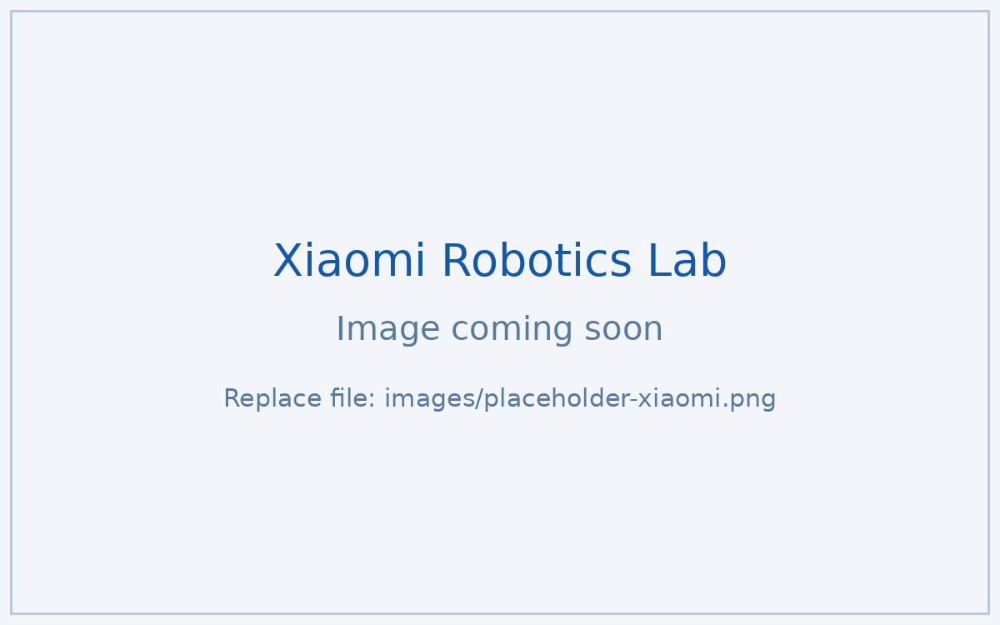

Humanoid simulation & mechanism research
ROLE & KEY CONTRIBUTIONS
Simulation and mechanical research intern on the Ultron V3.0 humanoid, laying groundwork for Sim2Sim and Sim2Real validation.
- Reproduced and transferred the RoboGrammar morphology-generation framework;
- Ran GJK-based workspace simulations and full-body joint-torque and wrist-collision analysis in MuJoCo/Simscape;
- Researched artificial-muscle actuation and rebuilt the MATLAB/URDF parser to support the pipeline.
Overview
At Xiaomi Robotics Lab I work at the simulation end of humanoid development — the analysis that decides whether a mechanism is worth machining. My work centers on the Ultron V3.0 humanoid platform, spanning workspace analysis, joint-torque studies, and research on automated robot-morphology design.
What I work on
- Morphology generation. Reproduced the RoboGrammar framework for graph-grammar-based robot morphology generation and simulation optimization, and explored its transfer from Unitree-based platforms to the Ultron V3.0 humanoid for Sim2Sim and Sim2Real validation.
- Workspace analysis. Simulated the upper-limb workspace, collaborative workspace, and vision-guided collaborative workspace of the Ultron V3.0 using GJK collision detection.
- Dynamics studies. Analyzed full-body locomotion joint torques and wrist-mechanism collision issues in MuJoCo and Simulink Simscape.
- Mechanism research. Conducted research on fiber-based artificial muscles, and rebuilt a MATLAB/URDF-based parser for humanoid and wheeled robot models.

Scope note: this page describes only publicly shareable aspects of the work.
Internal designs and data are not included.